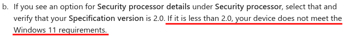
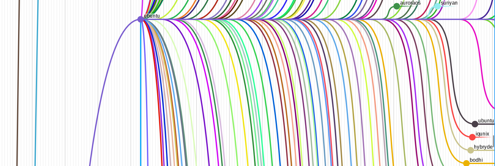

Lorenz Schwab
lorenz.schwab@heidelberg-instruments.com
1. Contents
2. The issue(s)
- Windows 10 EOL in October 2025
- Obsolescent hardware (no TPM 2.0)
 1
- Windows 11 (still) not a great OS
2.1. Windows 11 features 1 / 2
| pros | cons |
|---|---|
| faster & more secure than W10 | hardware constraints (TPM, GPU) |
| better looks | harder to reach settings |
| darkmode | darkmode not system-wide |
| easy to use | cumbersome to install software |
2.2. Windows 11 features 2 / 2
| pros | cons |
|---|---|
| compatibility | bluescreens |
| updates | no updates for W10 |
| better touch support | anti-features (AI, ads, bloat- & malware) |
| MS office | microsoft dependency |
3. The Penguin

- Linux solves a lot of problems
- also creates some new ones
3.1. Linux
| pros | cons |
|---|---|
| no ads | might need emulation |
| install stuff manually | incompatible software |
| free (as in freedom) | steep learning curve |
| secure | configure yourself |
| the terminal | the terminal |
| customizability | options paralysis |
| hardware compatibility |
3.2. Problems solved
- hardware obsolescence
- bluescreens
- MS anti features
3.3. Problems introduced
- manual installation
- manual configuration
- options paralysis
- breaking your system
- steep learning curve (learn how to fix it)
4. Addressing the issues
- install a linux system on your personal hardware
- get tips for basic configuration
- get to know a few options
- the terminal
4.1. A linux?
- distributions (distro)
- bundle software that mostly work well together
- different out-of-the-box experiences
- many different flavours
- often common ancestors
4.2. The Kernel
- provides inner workings of the OS:
- system functions
- file systems
- hardware utilization
- virtual memory paging
- processes & scheduling
- and many more
4.3. The Distro
- sits on top of kernel
- Debian
- Ubuntu
- Mint
- Ubuntu
- OpenSuse
- RedHat
- Fedora
- Arch
- Manjaro
- Debian
4.4. Family tree
- do not be scared
 3
- you don't need to know all
- they are pretty similar anyways